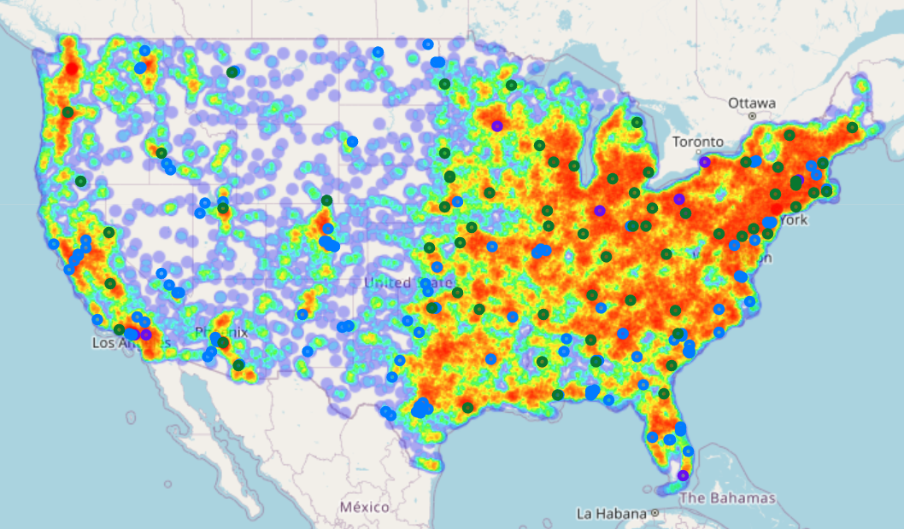
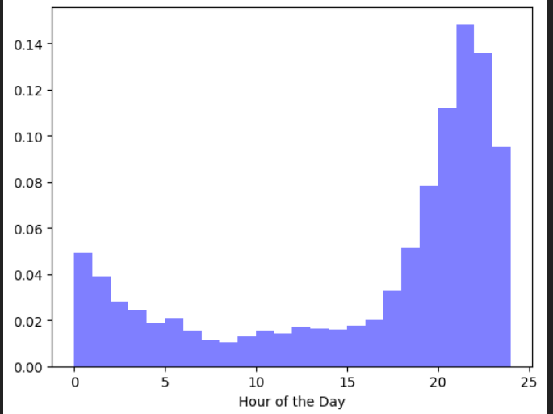
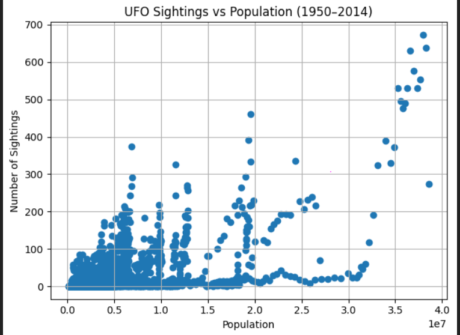

Motivation
Motivation
The dataset
This project contains several datasets, in order to explore the phenomena of UFO sightings through multiple lenses. The first and main dataset is the NUFORC UFO Sightings dataset, sourced from the National UFO Reporting Center and hosted on Kaggle, comprises around 80,000 individual reports of unidentified flying object (UFO) sightings. These records span more than a century, offering a foundation for both quantitative and qualitative analysis of UFO sightings. The second dataset this project contains is covering US military bases, it contains 776 entries, and 10 attributes, describing the location, the name of the base and the branch of service which the base is tied to. The third and last dataset used, is a dataset over historic populations in the different US States.
Motivation for this particular dataset
The interest in this dataset arises from a foundation of scientific curiosity. UFO sightings have long been a hot bed of conspiracy theory ranging from alleged extraterrestrial encounters to secret government projects. At the same time, they have played a prominent role in popular culture, featured in iconic films and television shows such as The X-Files, Close Encounters of the Third Kind, E.T., and The Thing, among many others. This makes the study of UFO reports not only intriguing but also culturally significant. We are particularly excited about the opportunity to explore these sightings through both quantitative and qualitative analysis. Regardless of whether one is a skeptic or a true believer, there is no denying the existence of UFOs in the strict sense of the term; Unidentified Flying Objects observed by individuals looking up at the sky. This dataset offers a substantial sample size spanning multiple decades and includes several key attributes that provide strong insights into these encounters. These include the reported shape of the object, geographic coordinates, state annotations, the duration of each sighting, and the year of occurrence. The militaray base dataset is interesting due to the coupling with government projects, such as air force experiemental flyings. The military base dataset is interesting because it is linked to government projects, such as experimental flights by the Air Force. The historic state population dataset, is interesting due to the correlation between popualtion and UFO sights.
Goal for user experience
Our goal is to provide an engaging and informative experience that encourages critical thinking about UFO sightings. By taking a skeptical perspective, we aim to help users explore alternative explanations for sightings—such as proximity to military bases or population density. Through tools like heat maps and time series visualizations, we wanted users to interact with the data and uncover patterns that might suggest grounded, non-extraterrestrial causes for reported sightings.
###Write about your choices in data cleaning and preprocessing
For the UFO sightings dataset, our first decision was to filter out all entries outside the United States. This choice was based on two main reasons. First, the vast majority of sightings approximately 74,000 out of 80,000 occurred within the U.S., making it the most relevant and data-rich region for analysis. Second, this allowed us to narrow the scope of the project to a more manageable and consistent geographic focus.
In the military base dataset, we further refined the data to include only U.S. Air Force bases. While all branches of the military operate aircraft, the Air Force is uniquely dedicated to aeronautics. Additionally, it would be difficult to reliably distinguish between different types of army bases (e.g., infantry vs. air units), making the Air Force the most suitable focus for this analysis. We removed all rows containing missing (NaN) values from each dataset.
Write a short section that discusses the dataset stats, containing key points/plots from your exploratory data analysis
A lot of the data does not any obvious dataset stats like median, mean or standard deviation. This is because its often things like states, coordinates, or dates of of reporting. Alot of the explorative data analysis came from the plots we ended up showing. Where as we just made the plots cleaner and interactive. An example could be the heat map. Where we just had to create the heat map in order to see if our hypothesis were correct. 
One of the more explorative data analysis we did was with the hour of day plot which we did plot to see if there were anything of interest. 
For population the interesting thing was not much necessarily the population but the correlation between the population and the UFO sightings. The big plot which included all the datapoints about population and ufo sightings were actually also explorative since we wanted to see if there were anything interesting about the correlation., ”
###Our types of data analysis can be categorized into two categories. Trying to plot data from which we can see a trend or trying to find a correlation between data. We wanted to see if we could find a trend in the number of UFO sightings. We wanted to see if there was a trend in regards to airforce bases and we wanted to there was a trend of when the sightings happened. From this we got suspicion that there was a correlation between the number of UFO sightings and the population of the states. Which we then wanted to look further into by calculating the correlation coefficient.
We learned that the number of sightings have been increasing over the years and that some signinficant media releases might have had an impact on increasing the number of sightings. We did also find out that our hypothesis about airforce bases and UFO sightings might not have that correect and that the explanation might more so be because of the population of the different states and the fact that airforce bases are often located in more populated areas. ,
We did also find out that the most common shape of UFOs are light and that they are often reported in the evening. This is not surprising since most people are awake during the evening and that the light is more visible in the dark.
We did find out that there is a rather strong correaltion population and the number of UFO sightings.
###This project lends itself naturally to a magazine-style format. Instead of simply representing af straightforward narative, it showcases a collection of interconnected visualisations, therefore it would also require some explanatory text, inbetween the visiaulations in order to discuss their meaning and relation.
Visual Narative
For visual structuring the project is structured using a consisten visual platform, it uses the same color scheme for all visualisations, through a consistent visual narrative.
Which tools did you use from each of the 3 categories of Narrative Structure (Figure 7 in Segal and Heer). Why?
Narative structure
This project employed linear ordering. The layout follows a linear structure, guiding the reader from top to bottom. Each section pairs explanatory text with its corresponding plot, encouraging readers to read, reflect on the visualization, and then move naturally to the next insight in the sequence.
The project also used hover/highlighting in order to increase the information of each plot shown, for example in the correlation plots it is possible to observe which state, what year, and the number of sightings each datapoint represents. Using hover/highlighting it is possible to add this additional information without it adding more noise to the visualisation. Another interactivity method used was filetering, figure 5, allowing the reader to filter for states, in order to see correlation of a unique state.
For messaging the project used captions for captions and annotations for every visualisation in order to simplify for the reader the information of the visualisation. Thereby we expect the reader can extrapolate more information more efficiently from each visualisation. The project has an introduction in order to clue the reader in on what this project will investigate, but also the motivation behind the investigation. Additionally, the visualizations are accompanied by a written article that offers further explanation, background, and interpretation to enhance the overall narrative.
###To explore a phenomenon as layered and speculative as UFO sightings, we chose visualizations that balance clarity with narrative richness. Each type serves a specific role in the overall investigation:
Time series plot (figure 1) were used to show the long-term trends of reported UFO sightings. Since the chosen time-series visualisation, is a stacked area chart, it serves a dual role by also giving a quick overview over the distribution of sighted shapes, allowing the reader to gain an easy overview over large parts of the dataset.
Pie chart (figure 2) offer an intuitive snapshot of the distribution of sighted shapes over the years. While the time series provides temporal trends, the pie chart simplifies the big picture, making it easier to compare shape frequency across the dataset. So in essence we use the stacked area chart for gaining an insightful quick overview, while using the pie chart for a deepdive, into the distribution of the sighted shapes over the years.
Hourly bar plots (figure 3) help us understand the behavior of sightings within a single day. The noticeable evening peak aligns with the dominance of light as a reported shape and adds context to how observational conditions influence reports.
Heat map (figure 4) allow us to visually explore the geography of sightings and their potential connection to air force bases. This spatial analysis highlights regional clustering and provides clues about the influence of local activity or population centers.
Scatter plots and correlation graphs (figure 5 and 6) were included to rigorously test the relationship between sightings and population size. These visualizations help bridge anecdotal patterns with measurable trends, giving weight to the hypothesis that UFO reports track more closely with where people live than with where “unknowns” actually appear.
By using a mix of visual formats each suited to its data type we aim to provide both depth and accessibility, inviting readers to move from broad overviews to more detailed interpretations, all while staying grounded in the data.
###What went well?
We think that we extrapolated quite a lot of information from the UFO sightings data. By comparing sightings to movie releases, correlating state populations with sightings, applying a heatmap and marking USA airforce bases and likewise looking at the time of day of said sightings. We have been able to say a lot about the tendencies in the increases of sightings.
What is still missing? What could be improved?, Why?
Further analysis into the data s.t. applying NLP (Natural Language Processing) to work with the comments people came with for their sightings. This would have opened a lot of doors, as the comments might have given some qualitative data that we cant just extrapolate from atributes such as date, location, shape etc.
One of the main problems is that we do not present anything 100% conclusive in the data. Since a lot of the data can be explained simply by the fact that the more people increase the number of sightings. Therefore it is hard to conclude anything in regards to things like airforce bases and hour of the day. It just also kinda difficult when working with social data to say anything simple. Since it often hugely complex why things like UFO sightings increase.
###We write the contributions as in the table below to. Everyone has done some part in each section but for each section someone took a lead role, which is shown in the table below
| Section | s224409 (%) | s224369 (%) | s224394 (%) |
|---|---|---|---|
| Introduction | 40 | 30 | 30 |
| Time Series Plot | 25 | 50 | 25 |
| Hour of the Day | 35 | 35 | 30 |
| Heatmap | 50 | 25 | 25 |
| Correlation Between | 25 | 25 | 50 |
| Conclusion | 25 | 35 | 40 |